NIKE+ RUNNING APP REDESIGN
FALL 2016 | UX Researcher & Designer
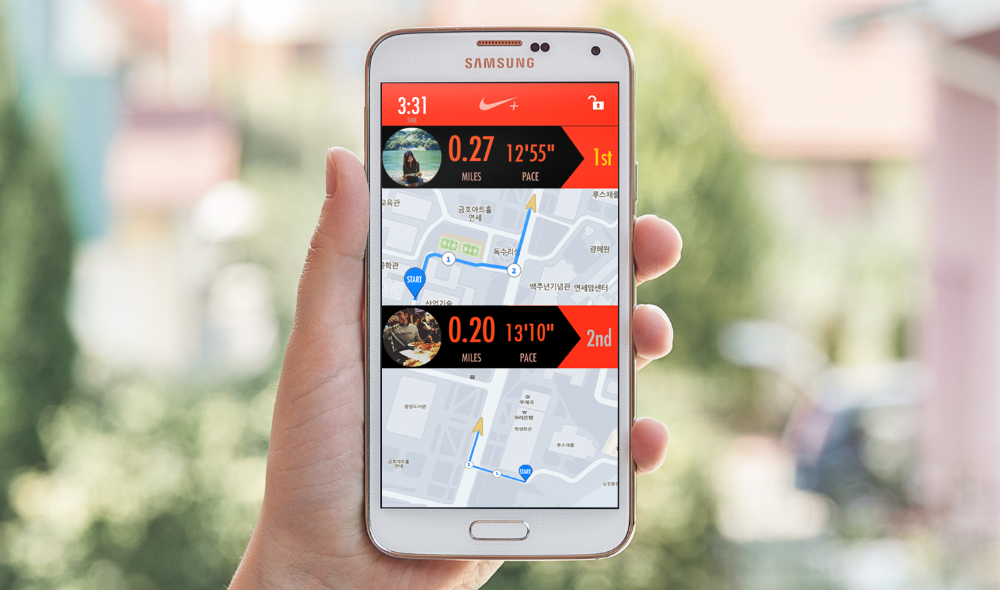
In my HCI course I took when I studied abroad in South Korea, we were to choose an application that we wanted to improve. I chose the Nike+ Running application because when I used it to workout, there were many usability issues that made me want to discontinue my use of it. It inspired me to try my hand at improving it in a team of three.
The Nike+ Running application is a phone application designed to help track and motivate runners while on their runs. It’s there to help runners know exactly how much they’ve run, where they’ve run, and to motivate runners with challenges and awards. My role was to identify the pain points users had with the application and to remedy those pain points through prototypes.
Type: Usability, Information Architecture, Mobile App Design
MY CORE RESPONSIBLITIES
- Fix the existing application’s heuristic violations
- Redesign the interface to make it easier to use
- Add additional features that would most motivate users to use the application
- Paper prototype ideas and tested these prototypes on users to iterate upon the usability flaws found
- Created high fidelity prototypes on Photoshop
- Made prototypes interactive on Invision and tested on users
- Tools Used: Pen and paper, Adobe Photoshop CS5, Invsion
TASK ANALYSIS
First, we made sure that the Nike+ app was indeed in need of improvement. We did an initial evaluation of the heuristic violations as a team. I then interviewed a couple of outside users about running applications in general as well as getting them to try the Nike+ app to see if they have similar painpoints that I found. After solidifying that this was indeed a problem, we created some user personae and scenarios. In the end, we decided to take on these four main tasks:
- Improve the overall usability of the application by fixing heuristic violations
- Create a more intuitive graph of running improvements
- Add personal goal setting feature
- Create a more socially encouraging running app
A more detailed process of our task analysis can be found HERE.
LOW FIDELITY PROTOTYPE
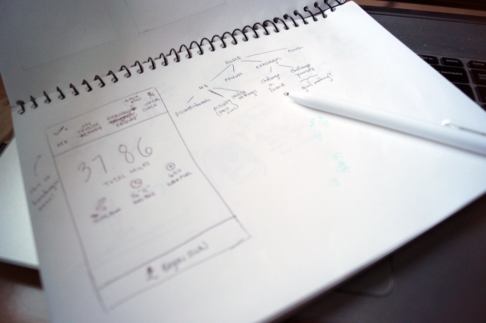
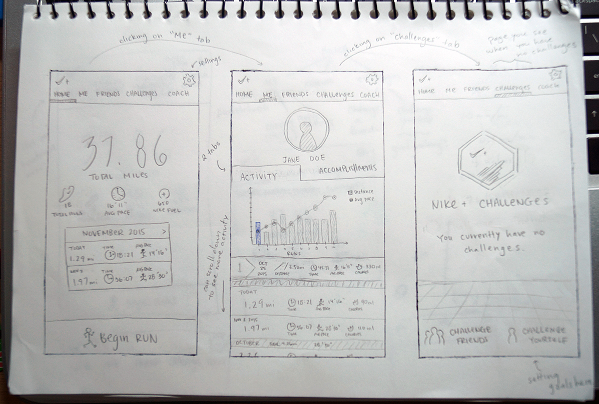
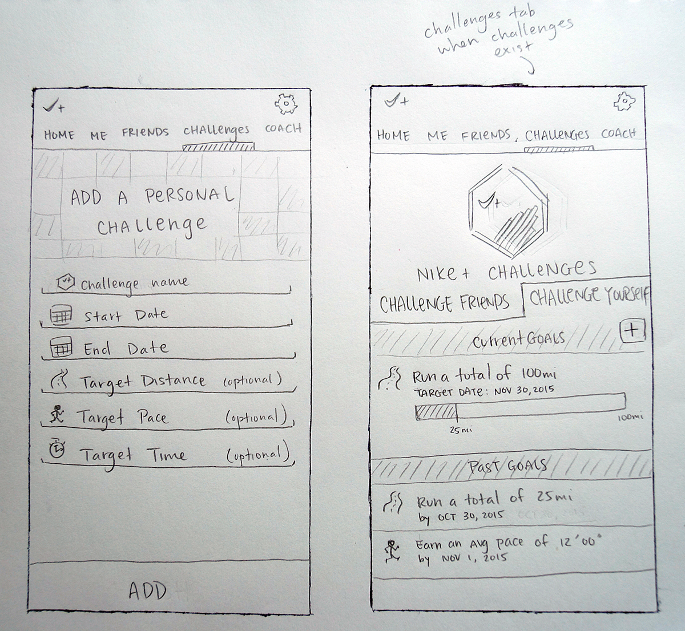
STORYBOARDS
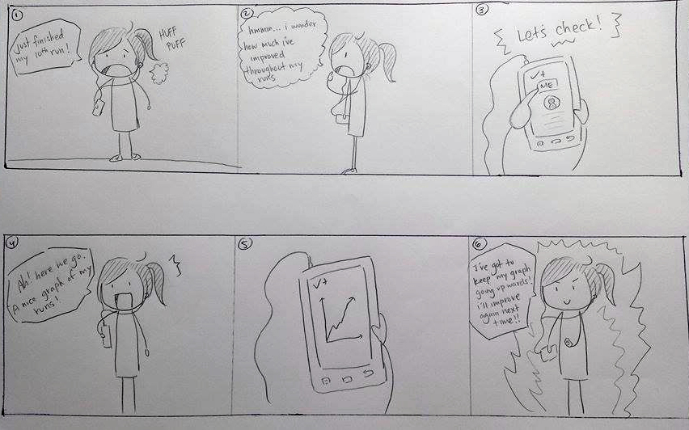
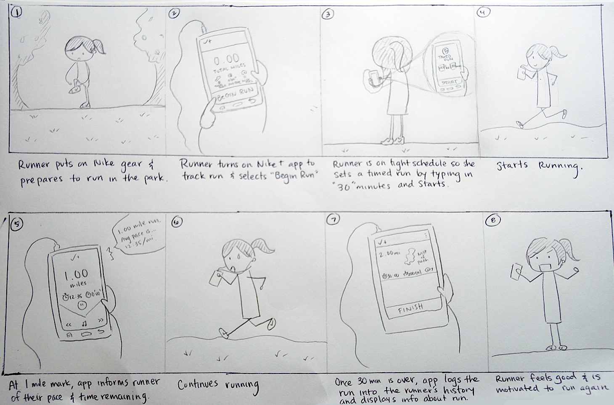
USER TESTING
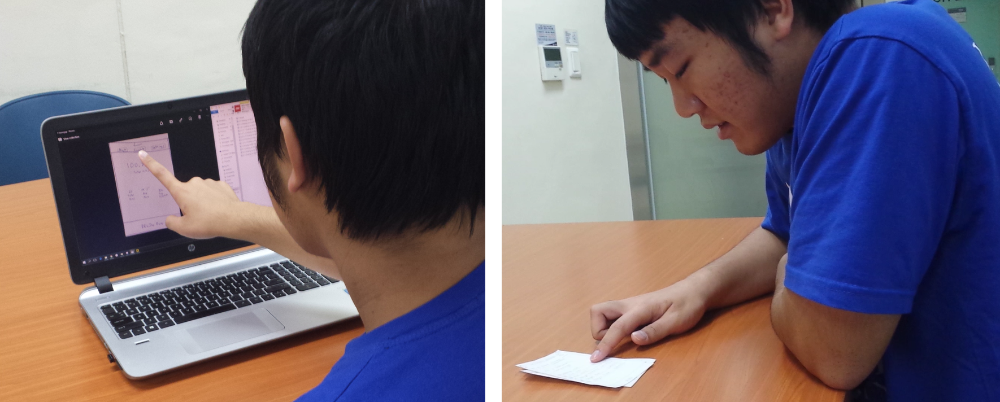
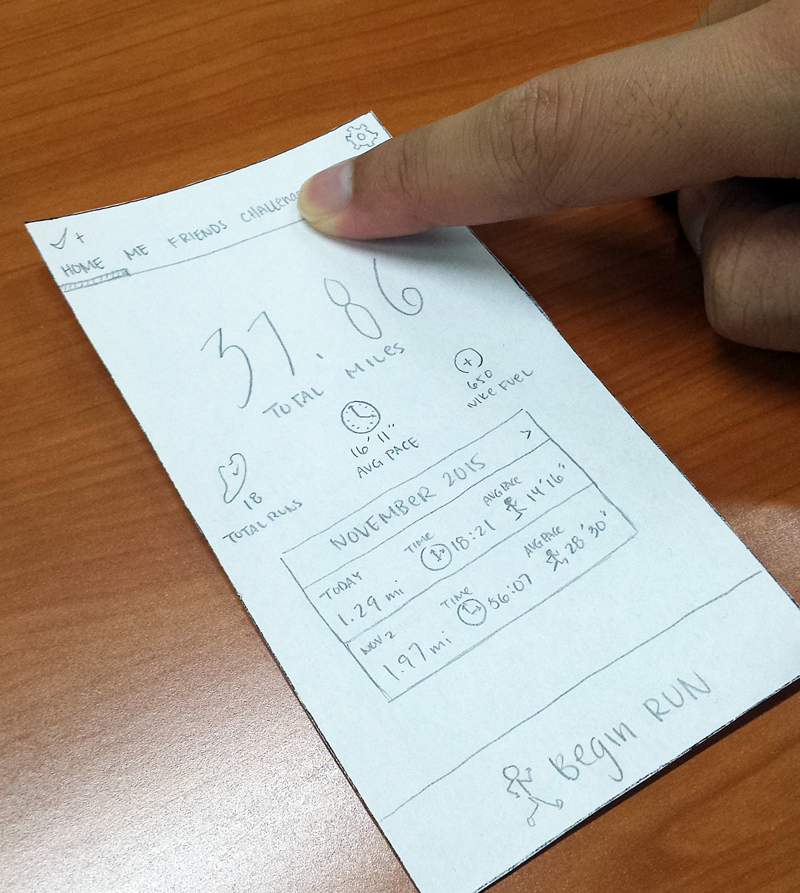
FINAL PROTOTYPE — BEFORE VS AFTER
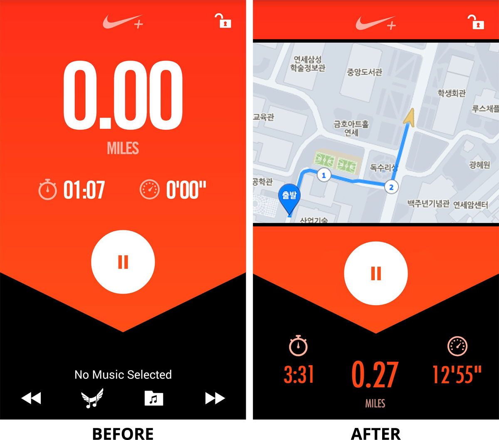
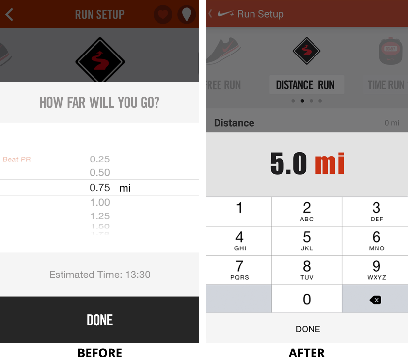
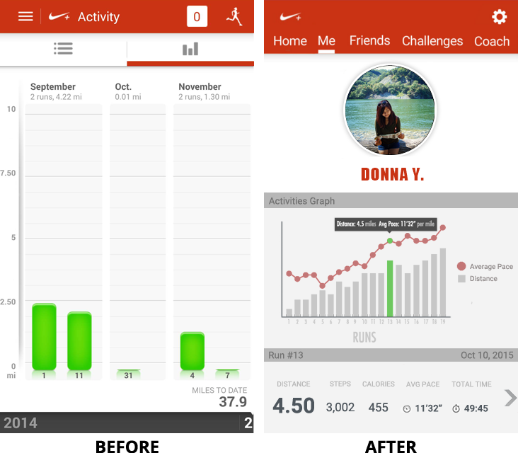
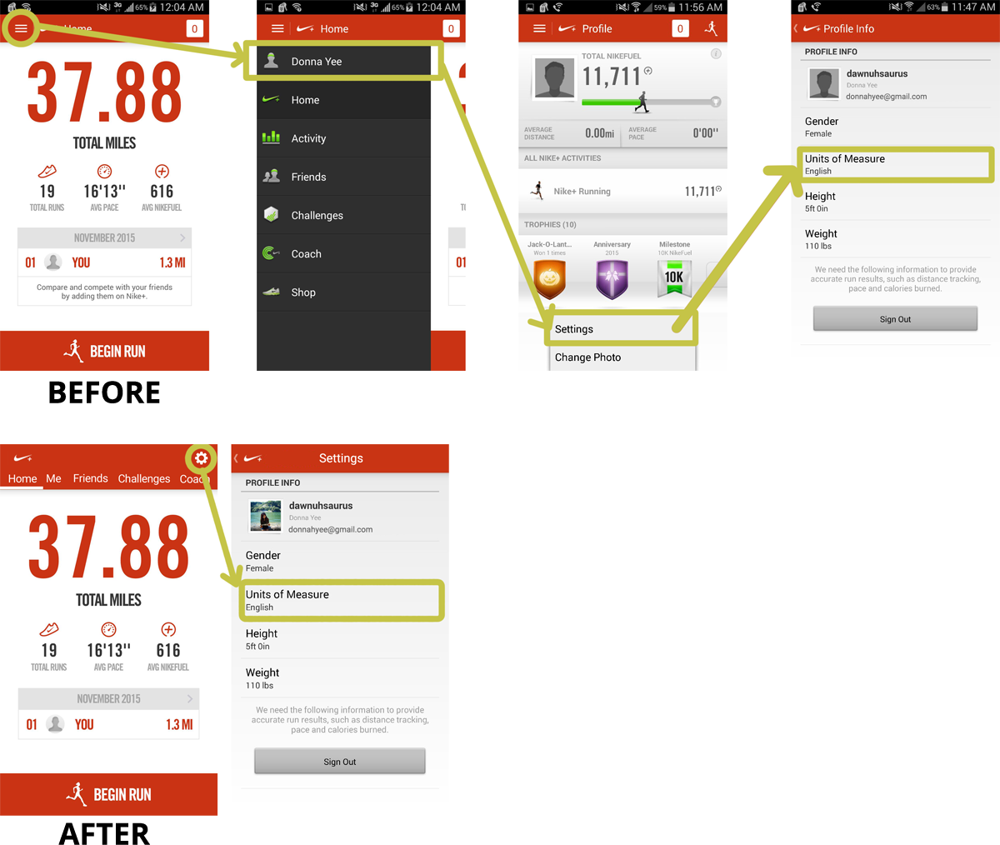
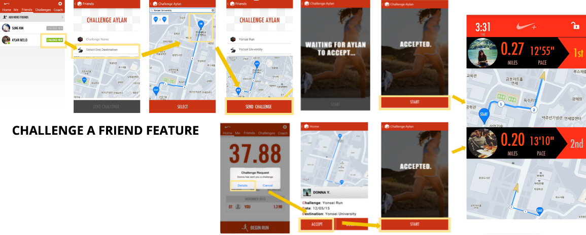
FINAL VIDEO AD
LEARNINGS RECAP
It was a good experience going through a structured six stage design process including: project proposal, task analysis, low-fidelity prototype, rapid prototype, heuristic evaluation and video prototype to modify and create our Nike+ 2.0 version of the application. We went through multiple iterations of evaluation, design, and implementation to build a more user-centric and intuitive design of the application.
I constantly kept the user’s wants and needs in mind while redesigning this application and I really enjoyed getting some of my foreign friends to help me with my user testing. It was interesting to see how different their thought process was from mine. Because there were many time constraints, I do regret not being able to deliver more quality prototypes. But in the end, we did succeed in making the application more usable as we saw from our user testing results.